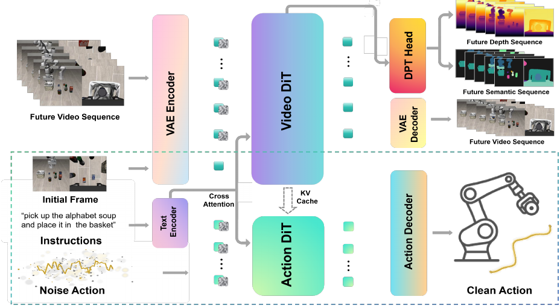
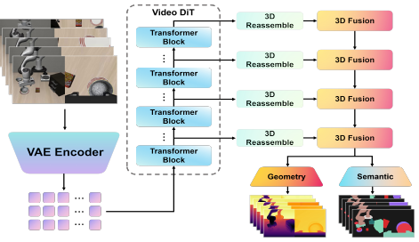
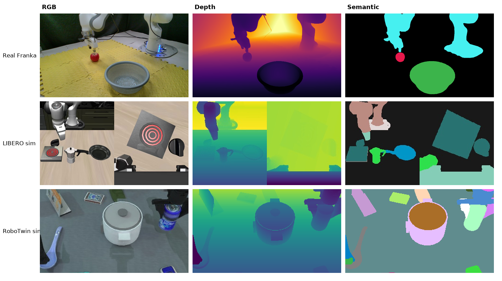
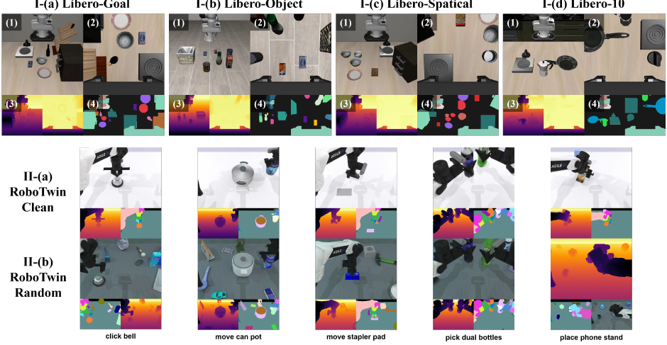
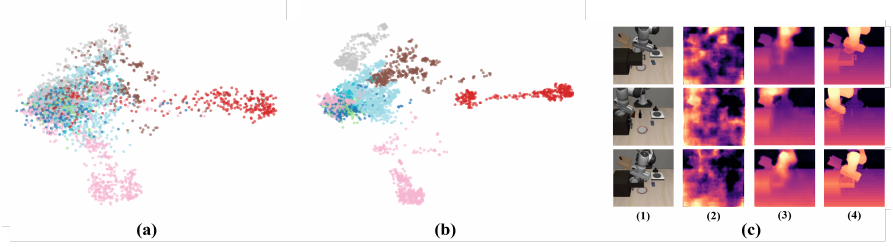
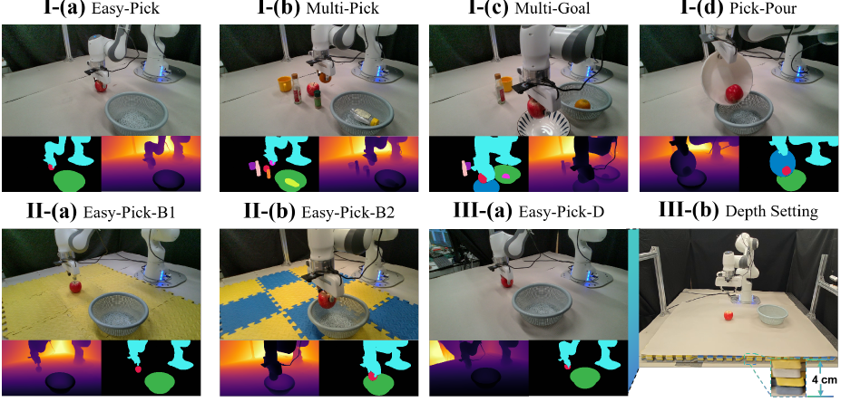
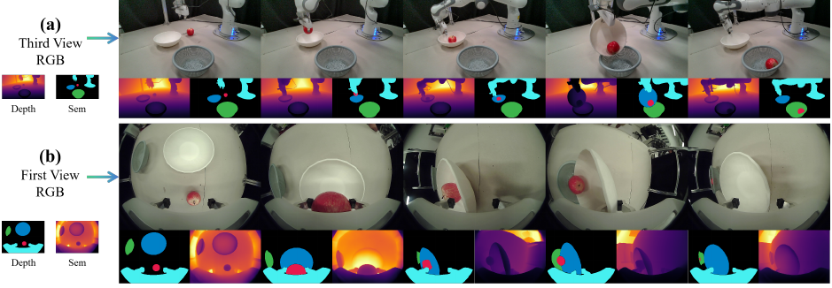

Recent World Action Models (WAMs) have demonstrated impressive capabilities in embodied decision-making. However, whether their effectiveness stems from explicit future imagination during inference or representation learning induced by predictive training remains an open question. Emerging evidence suggests the primary advantage lies in learning robust latent representations rather than generating future observations at test time.
Nevertheless, existing WAMs mainly rely on RGB-based future prediction, which provides limited structural and spatial understanding of complex environments. To address this, we propose a structured world modeling framework that enhances latent representations through geometric and semantic supervision. Alongside future RGB prediction, our model introduces two auxiliary prediction branches for future geometry and semantic representations, enabling it to jointly capture scene dynamics, spatial geometry, and semantic context within a unified latent space.
Crucially, our approach preserves efficient inference by avoiding explicit future rollout or video generation at test time. Extensive experiments show that incorporating structured world supervision consistently improves action prediction accuracy, scene understanding, and robustness under challenging embodied scenarios — particularly under occlusions, object interactions, and complex environmental dynamics.
Structured geometric and semantic supervision, applied only during training — zero cost at deployment.
We clarify that the primary benefit of predictive world modeling comes from training-phase representation learning — dynamics-aware latent features via predictive supervision — rather than test-time imagination or rollout.
Future RGB, geometry, and semantic prediction are integrated into a unified framework, explicitly encouraging spatial geometry, 3D structural consistency, and object-level semantics beyond RGB-only supervision.
DPT-style auxiliary branches with 3D reassemble and 3D fusion modules aggregate multi-stage video tokens into dense geometry and semantic predictions, supervising the latent space at multiple resolutions.
Geometry and semantic heads are discarded at deployment. The model processes only the first observation's latent tokens in a single forward pass — no future rollout, no video generation.
A Mixture-of-Transformers backbone with shared attention: a video DiT for world modeling and an action DiT for policy execution, both guided by dense structured supervision.

Fig. 1. Architecture overview. The full diagram shows the training phase; the dashed box marks the inference stage. A video DiT predicts future latents supervised by RGB, geometry, and semantics through DPT heads, while an action DiT generates action chunks conditioned on the world representation via shared attention and KV cache.

Fig. 2. DPT auxiliary head. Multi-stage video tokens are reassembled into image-like multi-resolution features, progressively fused and upsampled through 3D fusion modules, then decoded by geometry and semantic heads. Both branches are discarded at inference.
Four objectives are optimized jointly. Geometry and semantics act purely as training-time dense supervision on the video latents — neither annotation is ever used as a model input at train or test time, mirroring how humans reason internally about structure and meaning.
ℒrgb
Flow-matching loss on future video latents — standard RGB future prediction.
ℒgeo
L₁ reconstruction of future geometry from the geometry head.
ℒsem
Pixel-wise cross-entropy on dense semantic logits from the semantic head.
ℒact
Flow-matching loss on the action chunk, conditioned on the world representation.

Fig. 3. Multi-modal structured supervision signals across domains. For every training frame the model receives dense future geometry (depth) and semantic supervision alongside RGB — collected on a real Franka Emika Panda and rendered in simulation on LIBERO and RoboTwin. These annotations supervise training only and are never fed to the policy.
Multi-modal observations across simulation benchmarks, plus tri-view teleoperation recordings from the real Franka platform.

Fig. 4. Simulation environments and multi-modal observations. (I) LIBERO suites — Goal, Object, Spatial, and LIBERO-10 — each shown with external and wrist RGB alongside depth and semantic views. (II) RoboTwin 2.0 dual-arm tasks under clean and domain-randomized settings.
Single-object pick-and-place. Three synchronized views: wrist fisheye and two RealSense cameras.
Object retrieval amid multiple distractors, requiring object-level semantic discrimination.
Multi-object placement into distinct target containers — spatial reasoning over several goals.
Cross-bowl apple pouring — long-horizon pick, place, and pour coordination.
Easy-Pick under a patterned mat background, testing robustness to visual distraction.
Easy-Pick on an elevated platform with a 4 cm height offset — geometric generalization.
State-of-the-art on both simulation benchmarks without any embodied pre-training, plus consistent real-world gains over the Fast-WAM baseline.
| Method | Paradigm | Spatial | Object | Goal | Long | Average |
|---|---|---|---|---|---|---|
| VLA Policies | ||||||
| OpenVLA | VLA | 84.7 | 88.4 | 79.2 | 53.7 | 76.50 |
| VLA-Cache | VLA | 83.8 | 85.8 | 76.4 | 52.8 | 74.70 |
| FlashVLA | VLA | 84.2 | 86.4 | 75.4 | 51.4 | 74.35 |
| SP-VLA | VLA | 75.4 | 85.6 | 84.4 | 54.2 | 74.90 |
| WorldVLA | VLA | 85.6 | 89.0 | 82.6 | 59.0 | 79.05 |
| NORA-Long | VLA | 92.2 | 95.4 | 89.4 | 74.6 | 87.90 |
| SmolVLA | VLA | 93.0 | 94.0 | 91.0 | 77.0 | 88.75 |
| CogACT | VLA | 97.2 | 98.0 | 90.2 | 88.8 | 93.55 |
| π0 + FAST | VLA | 96.4 | 96.8 | 88.6 | 60.2 | 85.50 |
| π0 | VLA | 96.8 | 98.8 | 95.8 | 85.2 | 94.15 |
| π0.5 | VLA | 98.8 | 98.2 | 98.0 | 92.4 | 96.85 |
| UniVLA | VLA | 96.5 | 96.8 | 95.6 | 92.0 | 95.23 |
| VLA-ADP | VLA | 99.0 | 98.2 | 96.8 | 91.2 | 96.30 |
| OpenVLA-OFT | VLA | 97.6 | 98.4 | 97.9 | 94.5 | 97.10 |
| World Action Models | ||||||
| Motus | WAM | 96.8 | 99.8 | 96.6 | 97.6 | 97.70 |
| LingBot-VA | WAM | 98.5 | 99.6 | 97.2 | 98.5 | 98.50 |
| Fast-WAM | WAM | 97.2 | 100.0 | 97.0 | 95.2 | 97.60 |
| GeoSem-WAM | WAM | 99.0 | 100.0 | 98.2 | 97.0 | 98.55 |
Improving the Fast-WAM average from 97.60% to 98.55% validates that explicit geometry and semantic supervision for future prediction helps beyond RGB-only world modeling.
| Method | Paradigm | Embodied PT | Clean | Random | Average |
|---|---|---|---|---|---|
| VLA Policies | |||||
| π0 | VLA | ✓ | 65.92 | 58.40 | 62.20 |
| π0.5 | VLA | ✓ | 82.74 | 76.76 | 79.75 |
| X-VLA | VLA | ✓ | 72.90 | 72.80 | 72.85 |
| World Action Models | |||||
| UWM | WAM | ✓ | 81.70 | 78.60 | 80.15 |
| GigaWorld-Policy | WAM | ✓ | 87.00 | 85.00 | 86.00 |
| Motus | WAM | ✓ | 88.66 | 87.02 | 87.80 |
| X-WAM | WAM | ✓ | 89.80 | 90.70 | 90.25 |
| LingBot-VA | WAM | ✓ | 92.90 | 91.50 | 92.20 |
| Fast-WAM | WAM | ✗ | 91.88 | 91.78 | 91.80 |
| GeoSem-WAM | WAM | ✗ | 92.94 | 92.14 | 92.52 |
A new state of the art of 92.52% average — surpassing LingBot-VA (92.20%) and the Fast-WAM base model (+0.8%) while requiring no embodied pre-training (✗). Per-task breakdowns are reported in the paper.

Fig. 5. Representation analysis. (a)–(b) Middle-layer video DiT token embeddings colored by semantic class: GeoSem-WAM forms markedly clearer class clusters than the baseline. (c) Frozen-backbone depth probing on LIBERO — columns are RGB, Fast-WAM depth, GeoSem-WAM depth, and ground truth. GeoSem-WAM recovers substantially sharper geometry from its latent tokens.
| Configuration | RGB | Geometry | Semantic | Average SR (%) | ΔSR (%) |
|---|---|---|---|---|---|
| RGB-only WAM | ✓ | ✗ | ✗ | 97.6 | — |
| + Geometry-aware | ✓ | ✓ | ✗ | 98.2 | +0.61 |
| + Semantic-aware | ✓ | ✗ | ✓ | 98.1 | +0.51 |
| + Geometry- and Semantic-Aware | ✓ | ✓ | ✓ | 98.6 | +1.02 |
Each branch helps on its own; together they are complementary. Geometry supports spatial motion perception during execution, while semantics supports task-level logical reasoning — jointly the foundation for accurate grasping.
Four manipulation tasks of escalating difficulty on a Franka Emika Panda, plus background and height generalization. 50 human teleoperation trajectories per task; 50 evaluation trials per setting.

Fig. 6. Real-world manipulation overview. (I) Four core tasks — Easy-Pick, Multi-Pick, Multi-Goal, and Pick-Pour — each shown with RGB, depth, and semantic observations. (II) Background generalization tests (Easy-Pick-B1/B2) on different mat patterns. (III) Height generalization: standard setup (Easy-Pick-D) versus a 4 cm elevated platform.
| Model | Easy-Pick | Easy-Pick-B1 | Easy-Pick-B2 | Easy-Pick-D | Multi-Pick | Multi-Goal | Pick-Pour | Average |
|---|---|---|---|---|---|---|---|---|
| Fast-WAM | 100 | 86 | 86 | 80 | 92 | 90 | 88 | 88.9 |
| GeoSem-WAM | 100 | 96 | 94 | 92 | 98 | 96 | 92 | 95.4 |
| Improvement | 0 | +10 | +8 | +12 | +6 | +6 | +4 | +6.6 |
The largest gains appear exactly where structured priors should matter most: background and height generalization (+10%, +8%, +12%) and multi-step spatial tasks (+6%, +6%, +4%). Simple single-object pick-and-place stays perfect for both methods, confirming the geometric-semantic priors do not degrade basic capability.

Fig. 7. Example episodes on the Franka platform. (a) Third-view RGB with the corresponding depth and semantic streams. (b) First-view (wrist fisheye) RGB with depth and semantics — the three modalities the training objective supervises jointly.
If you find GeoSem-WAM useful for your research, please cite our paper.
@misc{ma2026geosemwamgeometrysemanticawareworld,
title = {GeoSem-WAM: Geometry- and Semantic-Aware World Action Models},
author = {Fulong Ma and Daojie Peng and Wenjun Yue and Jiahang Cao and Bintao Wang and Qiang Zhang and Jun Ma},
year = {2026},
eprint = {2606.03188},
archivePrefix = {arXiv},
primaryClass = {cs.RO},
url = {https://arxiv.org/abs/2606.03188}
}